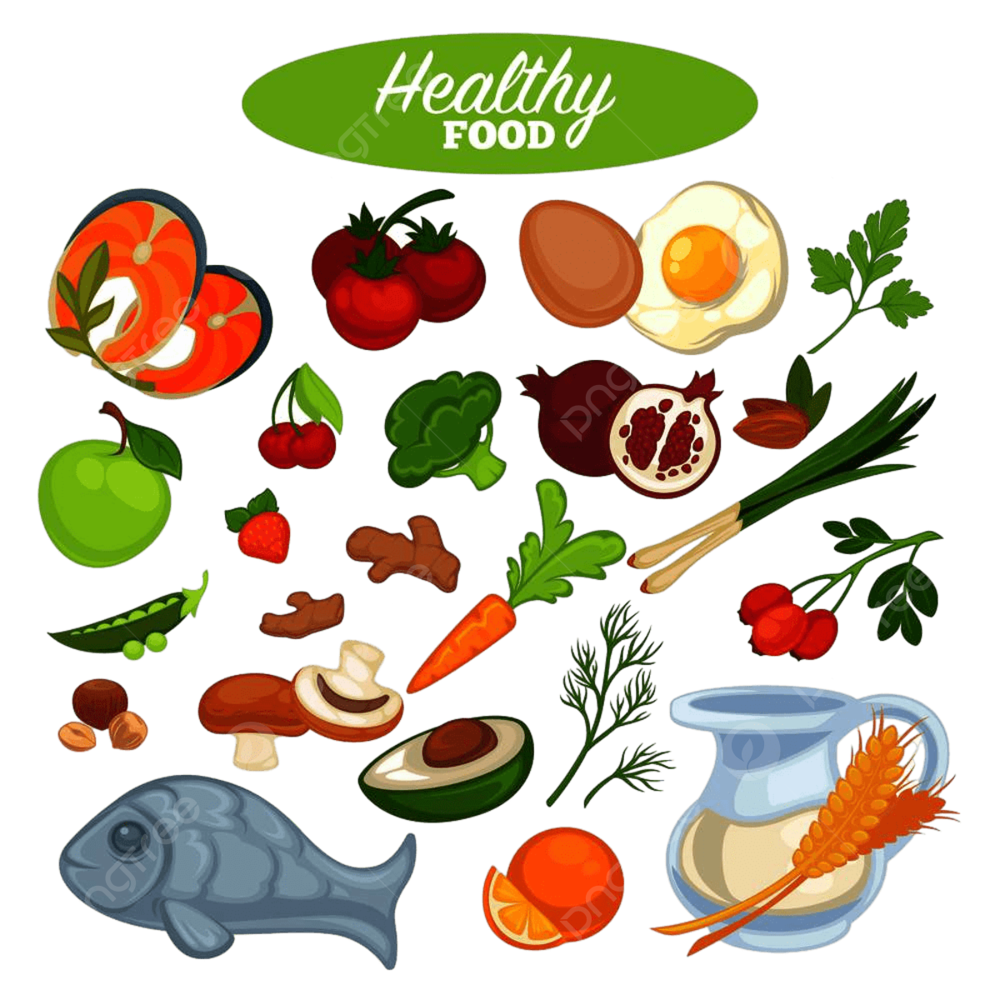

|  |
Hubungan penting antara makanan dan kesehatan:
-
Penyedia Energi : Makanan menyediakan kalori yang diperlukan tubuh untuk melakukan aktivitas sehari-hari, dari berfikir hingga bergerak. Karbohidrat, lemak, dan protein adalah sumber utama energi bagi tubuh.
-
Mendukung Fungsi Tubuh : Nutrisi dalam makanan, seperti vitamin, mineral, dan protein, berperan penting dalam menjaga kesehatan sistem tubuh. Misalnya, kalsium untuk kesehatan tulang, zat besi untuk pembentukan sel darah merah, dan vitamin C untuk meningkatkan sistem imun.
-
Mencegah Penyakit : Pola makan yang sehat dapat membantu mencegah berbagai penyakit, seperti penyakit jantung, diabetes, dan hipertensi. Makanan kaya serat, sayuran, dan buah-buahan membantu menjaga kesehatan jantung, sedangkan konsumsi makanan rendah lemak dan garam dapat mengurangi risiko tekanan darah tinggi.
-
Pengaruh terhadap Kesehatan Mental : Apa yang kita makan juga dapat memengaruhi kondisi mental. Diet seimbang dengan asupan omega-3, vitamin B, dan magnesium dapat membantu meningkatkan mood dan mengurangi gejala depresi.
-
Berat Badan dan Keseimbangan : Makanan berperan besar dalam pengaturan berat badan. Pola makan yang tidak sehat, seperti konsumsi makanan tinggi gula dan lemak, dapat menyebabkan obesitas, yang meningkatkan risiko penyakit metabolik.
|